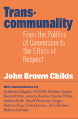

<body bgcolor="#FFFFFF" text="#000000" link="#0000FF" vlink="#CC0000" alink="#CC0000"><center><hr width="350" size="1" align="center" noshade>How can we build long-lasting communities and movements for change?<hr width="350" size="1" align="center" noshade><p><a href="https://cdcshoppingcart.uchicago.edu/Cart/ChicagoBook.aspx?ISBN=9781592130047&&PRESS=temple" target="_top">Buy this book!</a> | <a href="https://cdcshoppingcart.uchicago.edu/Cart/Cart.aspx?PRESS=temple" target="_top">View Cart</a> | <a href="https://cdcshoppingcart.uchicago.edu/Cart/Cart.aspx?PRESS=temple" target="_top">Check Out</a></p><p></p></center><!--none//--><h1>Transcommunality</h1>
<H2>From the Politics of Conversion to the Ethics of Respect</H2>
<H2><!-- commentators on cover only --></H2>
<h3>John Brown Childs</h3>
<P>cloth 1-59213-004-6 $74.50, Jan 03, <FONT COLOR=#990033>Available</FONT>
<br>paper 1-59213-005-4 $27.95, Jan 03, <FONT COLOR=#990033>Available</FONT>
<br>Electronic Book 1-59213-845-4 $27.95 <FONT COLOR=#990033>Available</FONT>
<BR> 256 pp
5.5x8.25
2&nbsp;halftones
</P><BLOCKQUOTE><I>"This is a bold and provocative book. It is visionary, and he has clearly articulated that vision of how groups, communities and nations might engage each other, holding on to their differences and yet respecting those of others. Childs does a fine job of laying out the sketches of such a set of relationships. His prose is elegant and contains strong hope and optimism."</I>
<br>&#151<b>Troy Duster</b>, Professor of Sociology, New York University, and Chancellor's Professor, University of California, Berkeley<I></I></BLOCKQUOTE>
<p>In this original and collaborative creation, John Brown-Childs offers unique insights into some of the central problems facing communities, social movements, and people who desire social change: how does one build a movement that can account for race, class and gender, and yet still operate across all of these lines? How can communities sustain themselves in truly social ways? And perhaps most important, how can we take the importance of community into account without forgoing the important distinctions that we all ascribe to ourselves as individuals?
<p>Borrowing from the Haudenosaunee, or Iroquois federation, Brown-Childs offers a way of thinking about communities as coalitions, ones that account for differences in the very act of coming together. Using the Iroquois as an example of transcommunality in action, he also offers specific outcomes that many people desire&#151racial justice and peace are two examples&#151as points of focus around which many disparate groups may organize, without ever subsuming questions of identity as an expense of organizing.
<p>In addition to Brown-Childs' own exegesis, twelve scholars and thinkers from all walks of life offer their own responses to his thinking, enriching the book as an illustration and example of transcommunality.
<p>In an age of fractured identities and a world that is moving toward a global community, Transcommunality offers a persuasive way of imagining the world where community and individual identity may not only coexist, but also depend upon the other to the benefit of both.
<BR>&nbsp;<h2>Excerpt</h2><P>Excerpt available at <a href="http://www.temple.edu/tempress">www.temple.edu/tempress</a></p>
<BR>&nbsp;<h2>Reviews</h2>
<p><I>"Both the content and the form of </I>Transcommunality<I> inspire hope&#151for activist practice and social analysis that can enable diverse communities to protect their particularities while sharing vision and strategy for social justice."</I>
<br>&#151<b>Richard Flacks</b>, Sociology Department, University of California, Santa Barbara
<p><i>"[Brown-Childs] uses his skills as a sociologist, his gift for storytelling, and the lesses he has gained...to inspire readers to apply his ideas to their own work...[it] is complex. It is a way of thinking and perceiving; it is a process and a way of interacting."</i>
<br>&#151<b><i>Multicultural Review</i></b>
<BR>&nbsp;<h2>Contents</h2><P>
<p>First Words
<br>1. Introduction
<br>2. Red Clay, Blue Hills: In Honor of My Ancestors
<br>3. Emplacements of Affiliation
<br>4. Learning from the Haudenosaunee
<br>5. Elements of Transcommunality
<br>6. Roots of Cooperation
<br>Acknowledgments
<br>Notes
<br>References
<p>Commentaries:
<br>A Quipu String of Commentaries: Some Reflections &#150 John Brown Childs
<br>Transcommunality: Beyond Tolerance, for Understanding &#150 Guillermo Delgado-P.
<br>Places and Transcommunality: A Comment on John Brown Childs's Idea of the Transcommunal &#150 Arif Dirlik
<br>Language of Space: The Territorial Roots of the Indigenous Community in Relation to Transcommunality &#150 Stefano Varese
<br>Transcommunality in a Global World &#150 Renate Holub
<br>Transcommunality as a Foundation for Globalization from Below &#150 Jeremy Brecher
<br>On Transcommunality and Models of Community &#150 Hayden White
<br>Pragmatic Solidarity and Transcommunality &#150 Andrea Smith
<br>Inclusive Difference: Transcommunality and the Hope for a Just World &#150 David Welchman Gegeo
<br>Transcommunality: Politics, Culture, and Practice &#150 Herman Gray
<br>One Love: Transcommunality among the Hip Hop Generation &#150 Sofía Quintero
<br>Transcommunal Practice in Northern Ireland &#150 John D. Brewer
<br>Transcommunality as Spiritual Practice &#150 Bettina Aptheker
<p>About the Contributors
<br>Index
</P><BR>&nbsp;<H2>About the Author(s)</H2>
<table><tr><td valign="top"><img src="/tempress/authors/1562_au.gif" height="90" width="75"></td><td width="100%" valign="middle"><p><b>John Brown Childs</b> is Professor of Sociology at the University of California, Santa Cruz, and is
author of two previous books, including <i><a href="428_reg.html" TARGET="_top">Leadership, Conflict, and Cooperation in Afro-American Social Thought</a></i> (Temple).</P></td></tr></table>
<P>Contributors: With commentaries by Bettina Aptheker, Jeremy Brecher, John Brewer, Guillermo Delgado-P, Arif Dirlik, David Welchman Gegeo, Herman Gray, Sofía Quintero, Renate Holub, Andrea Smith, Stefano Varese, and Hayden White.</P>
<BR><H2>Subject Categories</H2>
<p><A HREF="/tempress/sociology.html" TARGET="_top">Sociology</a>
<BR><A HREF="/tempress/political.html" TARGET="_top">Political Science and Public Policy</a>
</p>
<p align="center"><a href="https://cdcshoppingcart.uchicago.edu/Cart/ChicagoBook.aspx?ISBN=9781592130047&&PRESS=temple" target="_top">Buy this book!</a> | <a href="https://cdcshoppingcart.uchicago.edu/Cart/Cart.aspx?PRESS=temple" target="_top">View Cart</a> | <a href="https://cdcshoppingcart.uchicago.edu/Cart/Cart.aspx?PRESS=temple" target="_top">Check Out</a></p><p><font face="Arial" size="1"><a href="copyright.html" onMouseOver="window.status='Web Copyright Policy';return true;" onMouseOut="window.status=''" title="Web Copyright Policy">&copy;</a> 2015 <a href="http://www.temple.edu" target="new" onMouseOver="window.status='Link to Temple University home page';return true;" onMouseOut="window.status=''" title="Link to Temple University home page">Temple University</a>. All Rights Reserved. http://www.temple.edu/tempress/titles/1562_reg.html</font></p>